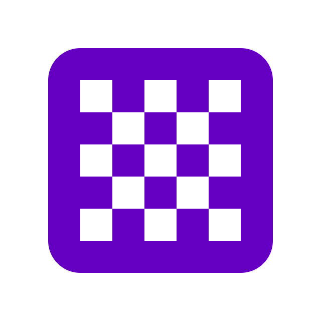

Snake
In meiner 3. Oberstufe habe ich mein erstes Programmierprojekt umgesetzt - Snake in JavaScript. Mithilfen von Tutorials konnte ich meine ersten Programmiererfahrungen sammeln.
Programmiersprache:
Java-Skript
Learnings:
- Arbeiten mit Visual Studio
- Grundlagen des Programmmierens
- Dokumentierung

Binärer-Taschenrechner
Während meiner Lehrzeit habe ich meinen ersten bedeutenden Projekt - einen binären Taschenrechner in C# - umgesetzt. Dabei erlernte und verwendete ich die Grundlagen von C#.
Programmiersprache:
C#
Learnings:
- C# Grundlagen
- OO-Programmierung
- Logisches Denken
aviEat
AviEat ermöglicht die Bestellung von Essen und verwendet eine Entity Framework-Datenbank zur Speicherung der Bestelldaten. LINQ-Abfragen waren während der Entwicklung des Projekts häufig erforderlich.
Programmiersprache:
C#
Learnings:
- Windows-Forms
- LINQ
- Entity Framework